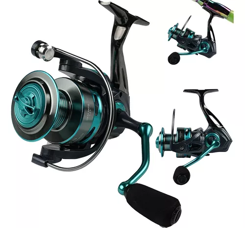
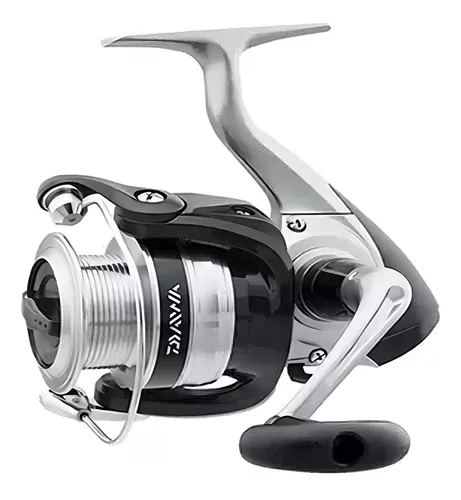
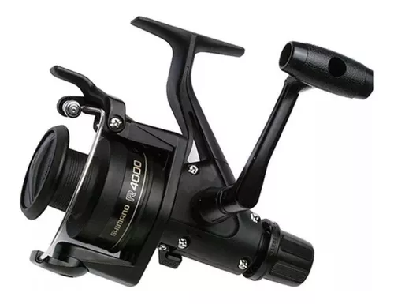
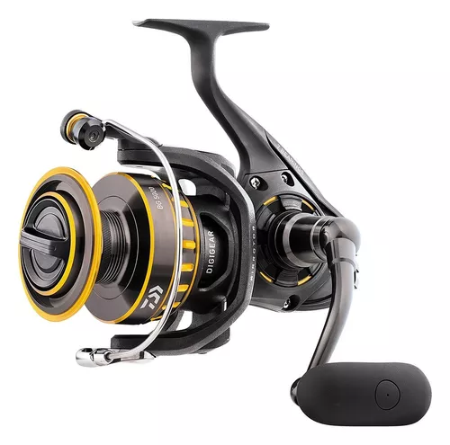
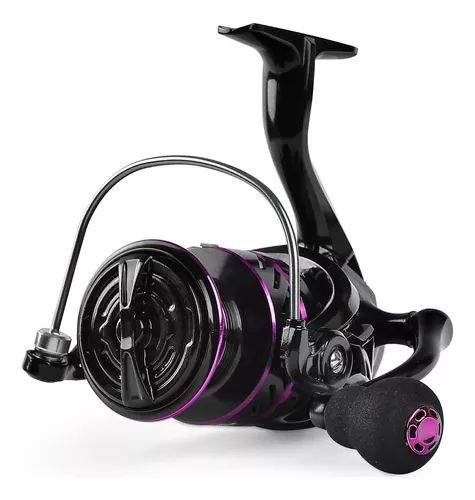

Carretes de Pescar

Carrete de Pescar Modelo 1
Carrete De Pesca Ligero De Metal Con Giro Rápido está hecho en material full metal 1.
Precio: $400

Carrete de Pescar Modelo 2
Resistentes y duraderos. Pura potencia de tracción. Diseño para diestros y zurdos. Alto rendimiento 2.
Precio: $450

Carrete de Pescar Modelo 3
Freno mecánico Este sistema trabaja directamente sobre el eje del carrete y controla la libertad de girar del mismo. 3.
Precio: $500

Reel frontal Shimano IX IX4000R
Diseño ergonómico y liviano, ideal para pesca en agua dulce y salada. Alta resistencia y durabilidad.
Precio: $480

Molinete New Bg 2500 7 rolamentos
Carrete de última generación con sistema de frenado magnético y cuerpo de aleación ultraligera.
Precio: $520

Carrete De Pesca Giratorio Profesional 5:2:1 He 6000 12 Ejes
Tira de 10kg: tirar de peces grandes de hasta 20lb no es ningún problema. Bobina de aleación CNC: fuerte e indeformable
Precio: $500